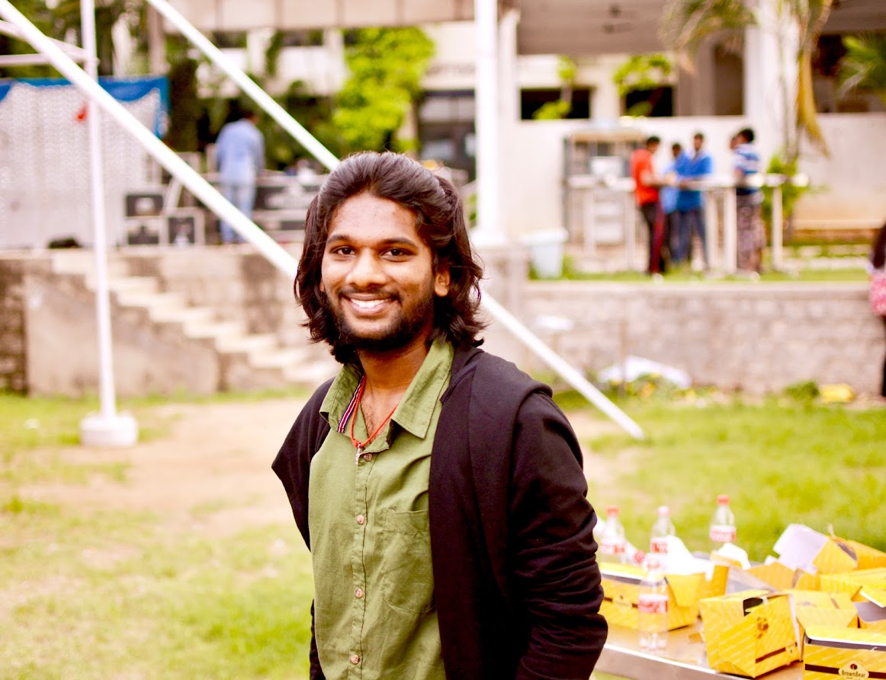

Hello, my name is
Shanmukh Krishna
I am a software engineering graduate student at San Jose State University with a passion for building innovative applications that solve real-world problems.
01. Where I've worked
02. What I've published
- Published a research paper on Human Age and Gender Estimation using Support Vector Machine (SVM) in ICACECS International Conference.
03. Some things I've built
Airport Management System
- Collaborated with team members and implemented airport management system using technologies - Python (Django), SQLite, and HTML/CSS, enabling personnel to oversee flights and assets, allowing customers to access information and make bookings.
- Developed and deployed a flight price prediction feature using an ensemble method (Random Forest), achieving 96% accuracy.
- Executed role-based authentication using Django's user authentication system, resulting in an 80% reduction in unauthorized access and a 99.9% uptime upon successful deployment on PythonAnywhere cloud platform.
Plant Disease Classification using Dense Net
- Created DenseNet model for plant disease classification achieving 97.4% accuracy.
- Implemented a web-based user interface for the plant disease classification model using Flask and ReactJS.
- Pre-processed a large-scale plant disease image dataset, including image augmentation and normalization, to improve model performance and generalization.
Buffalo after Sunset - Crime data Analysis
- Developed a project on analysing Buffalo's crime data using Tableau and PCA to uncover crime patterns and trends.
- Created interactive visualizations with Tableau such as heat maps, scatter plots to illustrate crime trends and patterns.
- Reduced dimensionality by 90% with PCA and performed KMeans Clustering to identified key variables affecting crimes.
- Used SQL queries to identify high-crime areas and frequent types of crime, enabling targeted prevention strategies.
Contradictory My dear Watson
- NLP problem in Kaggle and experimented with various algorithms like Count Vectorizer, Word2Vec, BERT and its variants.
- Used external datasets like XNLI, SNLI and MNLI which improved the accuracy of every algorithm by 10%.
- RoBERT with hybrid datasets gave us the highest accuracy of 95.7% and ended 3rd in the competition.
04. Get in touch